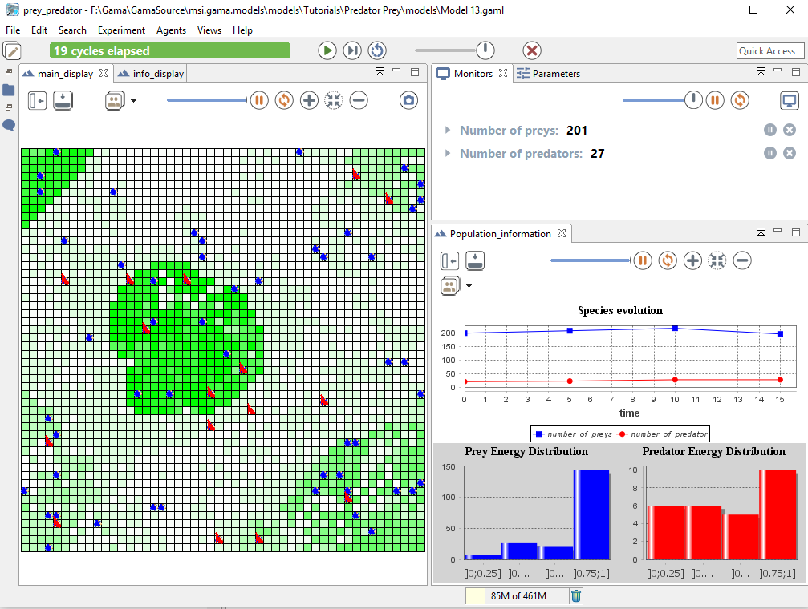
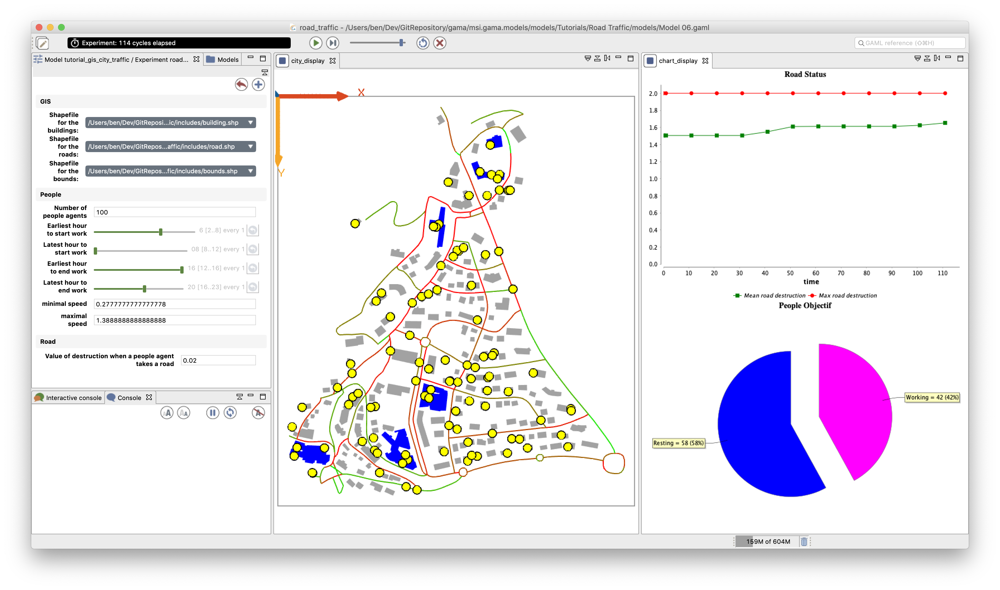
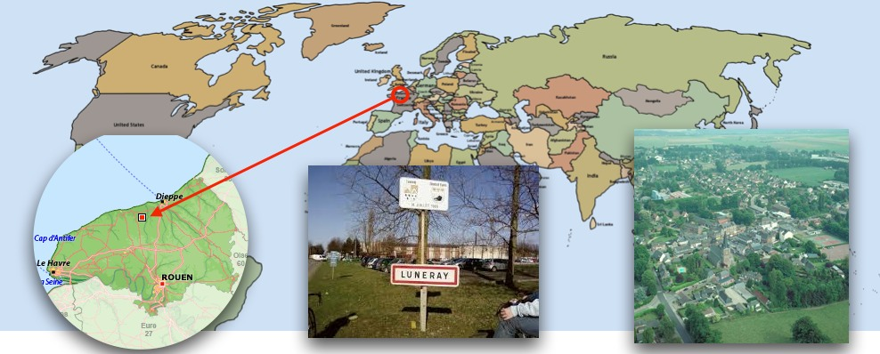
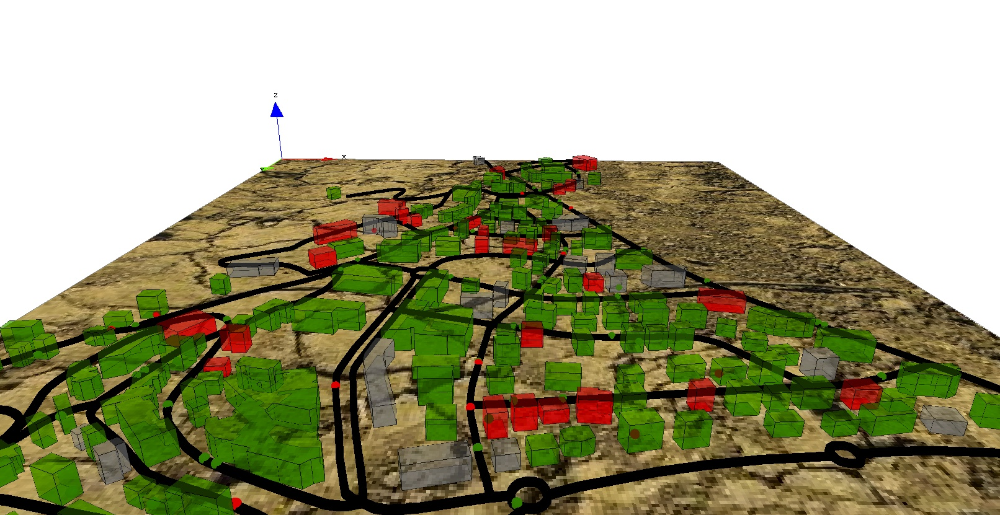

Tutorials
We propose some tutorials that are designed to allow modelers to become progressively autonomous with the GAMA platform. These tutorials cover different aspects of GAMA (Grid environment, GIS integration, 3D, multi-level modeling, equation-based models...). It is a good idea to keep a copy of the reference of the GAML language around when undertaking one of these tutorials.
- Predator Prey
- Road Traffic
- 3D Tutorial
- Luneray's flu
- Incremental Model
- BDI architecture
Predator Prey tutorial

This tutorial introduces the basic concepts of GAMA and the use of grids. It is based on the classic predator prey model (see for instance a formal definition here). It is particularly adapted to beginners that want to quickly learn how to build a simple model in GAMA.
Road Traffic

This tutorial introduces the use of GIS data. It is based on a mobility and daily activity model. It is particularly adapted to modelers that want to quickly learn how to integrate GIS data in their model and to use a road shapefile for the movement of their agents.
3D Tutorial
This tutorial introduces the use of 3D in GAMA. In particular, it offers a quick overview of the 3D capabilities of the platform and how to integrate 3D features in models.
Luneray's flu tutorial

This tutorial dedicated to beginners introduces the basic concepts of GAMA and proposes a brief overview of many features. It concerns a model of disease spreading in the small city of Luneray. In particular, it presents how to integrate GIS data and use GIS, to use a road shapefile for the movement of agents, and to define a 3D display.
Incremental Model

This tutorial proposes is an advance version of the Luneray's tutorial. It concerns a model of disease spreading in a small city. In particular, it presents how to integrate GIS data and use GIS, to use a road shapefile for the movement of agents, to define a 3D display, to define a multi-level model and use differential equations.
BDI Architecture
This tutorial introduces the use of the BDI architecture (named BEN provided with the GAMA platform. It is particularly adapted for advanced users who want to integrate reasoning capabilities in theirs agents, taking into account their emotions and social relationships.